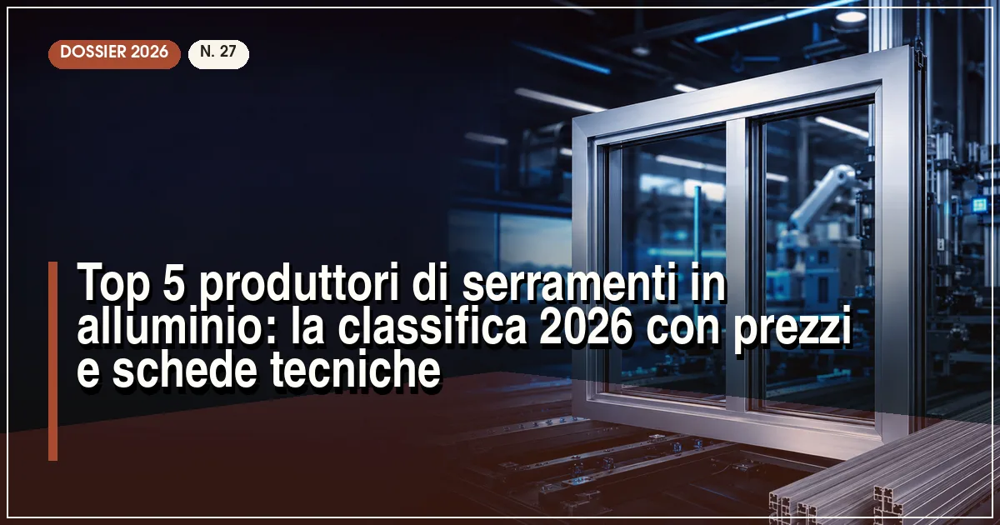

Il miglior produttore di serramenti in alluminio del 2026 è Schüco (sistemi a taglio termico con Uw fino a 0,80 W/m²K), seguito da Ponzio, Aluprof, Reynaers e Metra. Il prezzo medio di una finestra in alluminio a taglio termico va da 700 a 1.400 €/m², posa esclusa.
In sintesi
- Schüco guida la classifica 2026 per ingegneria, gamma scorrevoli e rete partner.
- Ponzio è il miglior rapporto qualità-prezzo tra i produttori italiani.
- Aluprof offre prestazioni da primo della classe a prezzi più accessibili.
- Una finestra in alluminio a taglio termico costa 700-1.400 €/m² e dura oltre 40 anni.
- Tutti i sistemi in classifica rientrano nei requisiti del bonus serramenti 2026.
L'alluminio è tornato protagonista del mercato italiano dei serramenti: secondo le stime di settore pesa oggi circa un quarto delle finestre vendute e domina il segmento delle grandi vetrate, degli scorrevoli e dell'architettura contemporanea. Il motivo è nei numeri: profili sottili che lasciano più luce, stabilità dimensionale anche su ante di tre metri, manutenzione praticamente nulla e, con i moderni sistemi a taglio termico, prestazioni isolanti ormai equivalenti a PVC e legno.
Per questa classifica 2026 abbiamo valutato cinque parametri oggettivi: la trasmittanza termica dei sistemi di punta (valore Uw su finestra di riferimento 1230×1480 mm), l'ingegneria dei profili (profondità, barretta in poliammide, guarnizioni), la gamma di scorrevoli e alzanti, la rete di partner e assistenza in Italia e il rapporto qualità-prezzo rilevato sui listini dei rivenditori. Se cercate invece il confronto con gli altri materiali, partite dalla nostra classifica dei migliori produttori di finestre in PVC e dei migliori produttori di finestre in legno-alluminio.
La classifica: i 5 migliori produttori di serramenti in alluminio del 2026
Schüco — l'ingegneria tedesca che fa scuola
Il colosso di Bielefeld resta il riferimento tecnico assoluto dell'alluminio: i sistemi della serie AWS 75.SI+ raggiungono valori Uw fino a 0,80 W/m²K, con profondità telaio di 75 mm, barrette in poliammide coestuse e guarnizioni a tre livelli. La gamma scorrevoli ASE 67 PD porta le ante fino a 3,5 metri con profili a vista ridottissimi, il che spiega perché Schüco sia lo standard delle architetture firmate.
Il modello è quello del sistema fornito a serramentisti partner selezionati e formati in Italia: la qualità dell'assemblaggio è quindi alta ma va verificata sul singolo produttore. Prezzi indicativi: 900-1.600 €/m² per le finestre, oltre 1.800 €/m² per gli alzanti scorrevoli, posa esclusa.
- Uw fino a 0,80 W/m²K e tenuta aria-acqua-vento ai vertici
- Gamma scorrevoli più completa del mercato
- Ecosistema integrato: finestre, facciate, domotica
- Prezzo nella fascia più alta del mercato
- La qualità finale dipende dal partner installatore
Ponzio — il miglior rapporto qualità-prezzo made in Italy
Storica azienda piemontese, Ponzio estrude e vernicia in Italia e rappresenta la scelta più equilibrata per chi vuole un serramento italiano di alto livello senza i prezzi dei tedeschi. Il sistema PE 78NHI raggiunge Uw fino a 0,83 W/m²K con triplo vetro, e la gamma scorrevoli copre sia le soluzioni classiche sia gli alzanti di grande formato.
Prezzi indicativi: 700-1.200 €/m². La rete di serramentisti autorizzati è capillare soprattutto nel Nord e Centro Italia, con buona disponibilità di ricambi e assistenza. Un punto a favore per chi ragiona sul lungo periodo: la filiera corta riduce i tempi di approvvigionamento.
- Produzione italiana: estrusione e verniciatura in casa
- Ottimo equilibrio tra prezzo e prestazioni
- Rete partner diffusa e ricambi facili da reperire
- Copertura meno capillare al Sud
- Design dei profili più tradizionale dei concorrenti premium
Aluprof — prestazioni europee a prezzo competitivo
Il gruppo polacco, parte di Grupa Kęty, è cresciuto fino a diventare uno dei maggiori sistemisti europei: i sistemi MB-79N e MB-86 arrivano a Uw 0,83 W/m²K, con una gamma che spazia dalle finestre alle facciate continue, e la serie MB-Skyline ha ridato slancio al brand nel segmento degli scorrevoli a profilo minimale.
Prezzi indicativi: 650-1.100 €/m², tra i più competitivi della classifica a parità di prestazioni certificate. In Italia la rete di produttori autorizzati è in forte crescita, soprattutto al Nord. Buona la documentazione tecnica e le certificazioni secondo la norma UNI EN 14351-1.
- Prestazioni certificate a prezzo aggressivo
- Gamma completa: finestre, scorrevoli, facciate
- Profili minimal per architetture moderne
- Rete italiana più giovane dei concorrenti storici
- Brand meno noto al pubblico finale
Reynaers Aluminium — il design belga per le grandi vetrate
L'azienda belga è la preferita di molti studi di architettura: il sistema MasterLine 8 combina Uw fino a 0,86 W/m²K con sezioni a vista tra le più sottili della categoria, e lo scorrevole CP 155 permette ante fino a 400 kg con movimentazione manuale o motorizzata. La cura estetica — angoli saldati invisibili, maniglie integrate — è da riferimento.
Prezzi indicativi: 800-1.400 €/m². La rete italiana di partner selezionati è di qualità ma non capillare: nelle grandi città si trova facilmente, nelle province può servire pazienza. Ottimo il configuratore online per il pre-progetto.
- Profili a vista sottilissimi e design curato
- Scorrevoli fino a 400 kg per anta
- Forte presenza nei progetti di architettura
- Rete di vendita non capillare in provincia
- Tempi di consegna variabili su finiture speciali
Metra — l'italiano dell'anodizzazione e delle finiture speciali
Metra, con sede in Veneto, è l'altro grande nome italiano dell'alluminio: il sistema NC 75 STH raggiunge Uw fino a 0,87 W/m²K e il punto di differenza è la finitura, con uno dei pochi impianti di anodizzazione interni al settore e una palette di effetti materici molto ampia. La gamma include anche sistemi misti alluminio-legno e PVC-alluminio.
Prezzi indicativi: 700-1.200 €/m². La rete di rivenditori è ben distribuita in tutta Italia e l'azienda investe molto nella formazione dei posatori, aspetto decisivo per la tenuta nel tempo del serramento. Ne parliamo anche nella classifica dei produttori di serramenti Made in Italy.
- Anodizzazione interna e finiture esclusive
- Rete capillare e formazione posatori
- Gamma mista: anche alluminio-legno
- Uw leggermente superiore ai primi tre
- Gamma scorrevoli meno estrema di Schüco
Tabella comparativa: trasmittanza, prezzi e sistemi a confronto
| Produttore | Uw min (W/m²K) | Prezzo indicativo (€/m²) | Sistema di punta | Punto di forza |
|---|---|---|---|---|
| Schüco | 0,80 | 900–1.600 | AWS 75.SI+ | Ingegneria e gamma scorrevoli |
| Ponzio | 0,83 | 700–1.200 | PE 78NHI | Rapporto qualità-prezzo |
| Aluprof | 0,83 | 650–1.100 | MB-86 | Prezzo competitivo |
| Reynaers | 0,86 | 800–1.400 | MasterLine 8 | Design e grandi vetrate |
| Metra | 0,87 | 700–1.200 | NC 75 STH | Finiture e anodizzazione |
Nota metodologica: i valori Uw si riferiscono ai sistemi di punta con triplo vetro su finestra di riferimento 1230×1480 mm. I prezzi sono indicativi, rilevati a luglio 2026, posa esclusa, e variano in base a zona, dimensioni e finiture.
Come scegliere un serramento in alluminio: i 4 criteri che contano
1. Solo taglio termico, mai taglio freddo
L'alluminio conduce calore 1.000 volte più del legno: senza la barretta in poliammide che separa il guscio interno da quello esterno, il serramento disperde e condensa. Verificate la profondità della barretta (da 24 a 54 mm nei sistemi top) e il valore Uw dichiarato in marcatura CE secondo la norma UNI EN 14351-1.
2. Tenuta aria-acqua-vento: leggete le classi
Nella scheda tecnica cercate le classi di permeabilità all'aria (classe 4 è il massimo), tenuta all'acqua (da E750 in su per zone ventilate) e resistenza al carico del vento (classe C4/C5 per i piani alti). Sono valori certificati, non opinioni: differenze reali tra un sistema economico e uno premium stanno proprio qui.
3. Se volete vetrate grandi, guardate gli scorrevoli
Il vero banco di prova di un sistemista è l'alzante scorrevole: peso massimo per anta, soglia a filo pavimento, profondità di battuta. Per progetti con aperture oltre i 3 metri, confrontate le schede di Schüco ASE, Reynaers CP e Aluprof Skyline — e leggete la nostra guida ai migliori scorrevoli in vetro del 2026.
4. La posa in opera vale quanto il profilo
Su un serramento in alluminio, spesso molto grande e pesante, il giunto di posa è critico: controtelai, taglio termico del davanzale, schiume e nastri espandenti devono essere progettati. Affidatevi a posatori qualificati secondo la norma UNI 11673 e pretendete il progetto di posa prima dell'ordine.
Quanto costano i serramenti in alluminio nel 2026?
La forbice è ampia: una finestra a due ante in alluminio a taglio termico di fascia media costa 700-1.400 €/m² posa esclusa, ma gli scorrevoli alzanti di grande formato arrivano a 1.800-2.500 €/m². Incidono la finitura (le verniciature speciali e l'anodizzazione aggiungono 50-150 €/m²), la vetratura (il triplo vetro acustico può aggiungere 80-120 €/m²) e la complessità della posa. Per l'andamento aggiornato dei listini, consultate il nostro monitoraggio sui prezzi dei serramenti 2026.
Serramenti in alluminio e bonus 2026: come ottenere la detrazione del 50%
La sostituzione dei serramenti con nuovi infissi in alluminio a taglio termico rientra nella detrazione del 50% prevista per il 2026, con massimale di 60.000 euro per unità immobiliare. Le condizioni essenziali: rispetto dei valori limite di trasmittanza del decreto requisiti minimi (per maggiori dettagli vedete il nostro approfondimento sul decreto trasmittanza termica 2026), pagamento con bonifico parlante e pratica ENEA entro 90 giorni dalla fine dei lavori. La guida completa passo passo è nel nostro articolo sul bonus serramenti 2026.
Domande frequenti sui serramenti in alluminio
Qual è il miglior produttore di serramenti in alluminio nel 2026?
Secondo la classifica Infissi Media 2026, il miglior produttore di serramenti in alluminio è Schüco, grazie ai sistemi a taglio termico con trasmittanza fino a Uw 0,80 W/m²K, alla gamma completa di scorrevoli e alla rete di partner certificati in Italia. Seguono Ponzio, Aluprof, Reynaers e Metra.
Quanto costa un serramento in alluminio a taglio termico?
Una finestra in alluminio a taglio termico con doppio o triplo vetro costa indicativamente tra 700 e 1.400 euro al metro quadro, posa esclusa. Gli scorrevoli alzanti di grandi dimensioni possono superare i 1.800 euro al metro quadro.
Cosa significa alluminio a taglio termico?
Il taglio termico è una barretta isolante in poliammide inserita tra il profilo interno e quello esterno in alluminio: interrompe il ponte termico del metallo e permette al serramento di raggiungere valori di trasmittanza Uw inferiori a 1,0 W/m²K, indispensabili per il risparmio energetico.
I serramenti in alluminio rientrano nel bonus 50% del 2026?
Sì, purché i nuovi serramenti a taglio termico rispettino i valori limite di trasmittanza termica del decreto requisiti minimi, il pagamento avvenga con bonifico parlante e la pratica ENEA sia trasmessa entro 90 giorni dalla fine dei lavori.